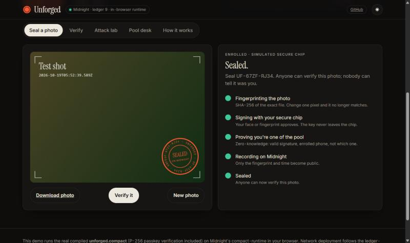
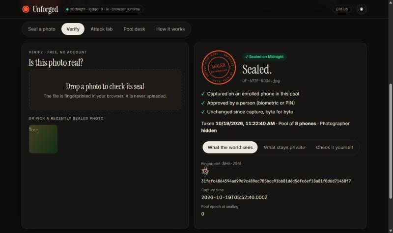
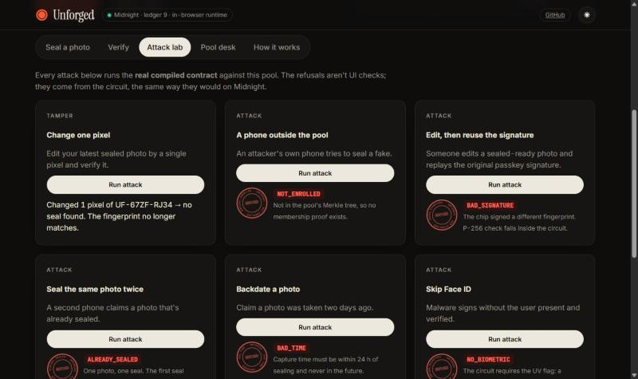

Anonymous, hardware-signed photo seals. A phone's secure chip signs the photo; a zero-knowledge proof on Midnight shows it came from one of a pool's enrolled phones, never which one.
Signed capture proves a photo is real, but its metadata can reveal the photographer, the device and the location. For a reporter in a conflict zone, that's a physical danger.
Today you choose: authentic and traceable, or anonymous and unverifiable.
Need to be believed without being identified. Their safety depends on it.
Need a one-second answer: real capture, unedited? Without learning the source.
Must label real vs synthetic (EU AI Act Art. 50 since Aug 2026; India IT Rules since Feb 2026) without hoarding personal data.
EU AI Act Article 50 transparency duties apply from 2 Aug 2026. India's 2026 IT Rules amendment asks platforms to label synthetic media and embed provenance.
Indian fact-checking organisations (IFCN signatories), then press-freedom NGOs and newsrooms with stringer networks.
A phone creates a passkey in its secure chip (Secure Enclave, StrongBox, TPM). The pool stores only an opaque commitment in a Merkle tree.
Face ID approves; the chip signs H(pool, SHA-256(photo)). A ZK proof shows the signer is one of the enrolled phones.
Anyone drops the photo: Sealed, with time and pool size. Photographer: hidden. Nobody can know.


| Circuit | Guarantees |
|---|---|
| enroll | Admin adds an opaque device commitment to a HistoricMerkleTree |
| seal | Anonymous membership + in-circuit WebAuthn secp256r1EcdsaVerify over this pool + this photo, UP+UV, pool ≥ minimum, 24 h window |
| revoke | Removes a phone and resets accepted roots |
| Public on Midnight | Never leaves the phone |
|---|---|
| Photo fingerprint | Which phone sealed it |
| Capture time | Device key and salt |
| Pool size, epoch | Merkle path |
| Opaque commitments | Passkey signature, authenticator data |
WebAuthn profile reused from Midnight Passport (Apache-2.0): clientDataJSON rebuilt in-circuit, RP and origin bound. Midnight's founder publicly floated a "ZK proof a photo was taken by a real Apple phone"; this is it, generalised to any passkey.
| Central database | Public chain | C2PA alone | Midnight | |
|---|---|---|---|---|
| Proves real capture | trust vendor | yes | yes | yes |
| Hides the photographer | operator sees all | key on-chain | metadata leaks | ZK membership |
| Verifiable without trust | no | yes | trust list | yes |
| Selective disclosure | manual | no | no | native |
| No crypto for users | yes | wallet + gas | yes | sponsored DUST |
| Attack | Result |
|---|---|
| Phone outside the pool | NOT_ENROLLED |
| Borrowed membership path | NOT_ENROLLED |
| Edited photo, reused signature | BAD_SIGNATURE |
| Replay from another pool | BAD_SIGNATURE |
| Stolen public key, no chip | BAD_SIGNATURE |
| Phishing origin / other website | REFUSED |
| No Face ID / PIN (UV) | REFUSED |
| Same photo twice | ALREADY_SEALED |
| Backdated / future photo | BAD_TIME |
| Pool too small to hide anyone | POOL_TOO_SMALL |
| Revoked phone | NOT_ENROLLED |

Free forever for anyone. API free tier. The public good that drives adoption.
Newsrooms & NGOs pay per enrolled device / month (hypothesis $8–15). Independent journalists ride NGO-sponsored pools free.
Insurers, marketplaces, KYC: per sealed capture (hypothesis $0.05–0.50).
Platforms labelling real vs synthetic at scale.
A bigger pool hides everyone better, so shared pools get more valuable with every organisation that joins. Like Tor, for photographers.
Truepic, ProofMode, Numbers ProofSnap, OpenOrigins and native C2PA prove authenticity. None hides the signer while staying publicly verifiable. We are the privacy layer for content credentials.
Contract with in-circuit P-256 + anonymous membership. 26 tests. Web app with real passkeys, verify, attack lab, pool desk. Founding docs.
Ledger-9 network deploy (Preprod after the fork), phone PWA, Desk v1, sponsored fees, submission relay, 1–3 design partners sealing real photos.
Native iOS/Android with App Attest / Key Attestation (camera-bound pixels), device-bound keys, paid attribution ("claim this seal").
C2PA bridge (Pixel, Leica → anonymous seal), coarse-location disclosure, edit-tolerant seals, video, Verify API and insurer pilots.
A web passkey proves a person approved on an enrolled authenticator, not that the camera sensor produced the pixels; native attestation closes this in Wave 4. Anonymity is as strong as the pool is large; the contract enforces a minimum.
github.com/bunnyyxtan/unforgedBuilt on MidnightApache-2.0